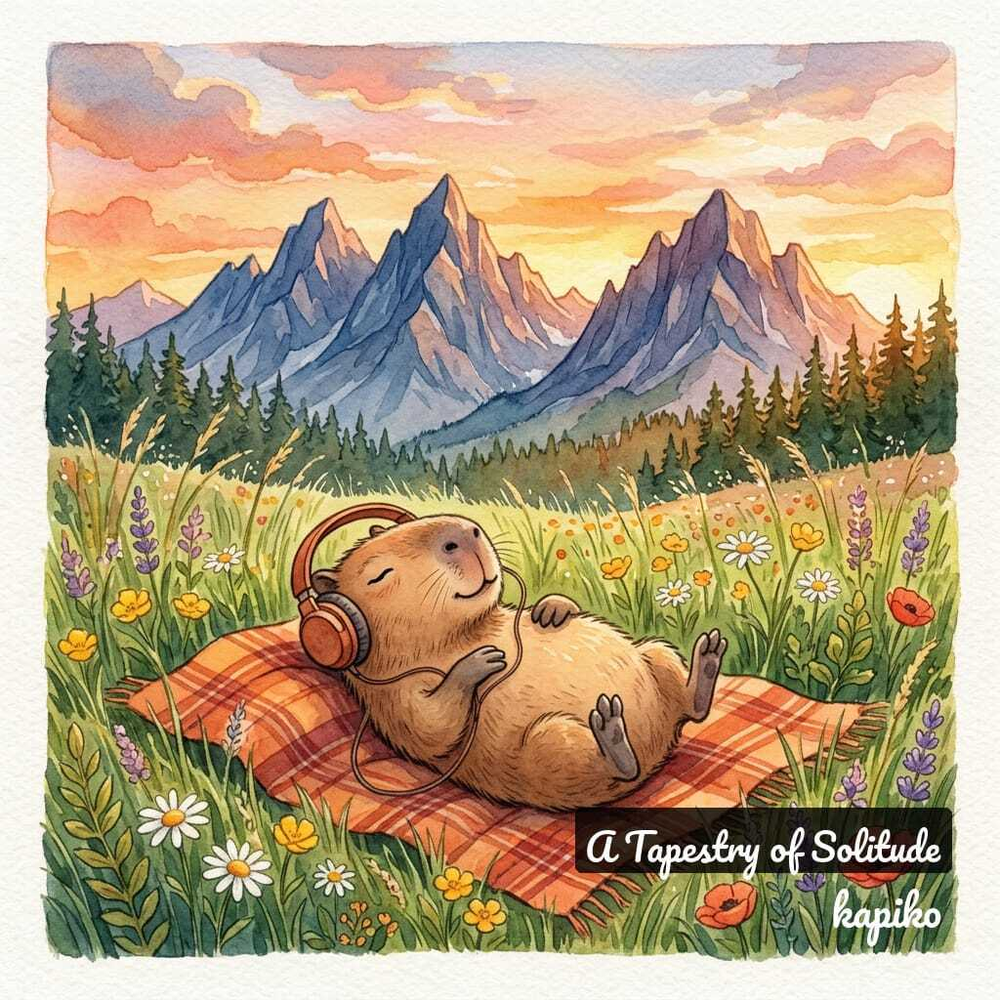

AI-crafted ambient music for the soul
lo-fi · acoustic guitar · studio ghibli vibes
Lose yourself in gentle acoustic textures and ambient soundscapes — each track a hand-painted world waiting to be explored.

13 solo guitar tracks woven from quiet mornings, gentle rain, and the peace of being alone with your thoughts. kapiko's debut album — available now on all platforms.
A gentle solo guitar piece for quiet mornings, deep focus, and peaceful reflection.
Soft fingerpicked melodies drifting like smoke through a quiet evening.
Quiet piano keys painting the last light of day over a calm shore.
kapiko was born from a question: what would it sound like if a capybara composed lullabies for rainy afternoons?
Every track is a collaboration between artificial intelligence and the boundless imagination of Studio Ghibli's hand-painted worlds — warm acoustic guitar melodies layered with ambient textures, designed to dissolve the noise of the day.
The music is AI-generated, but the feeling is entirely real. Each piece is crafted to be a small sanctuary — two to four minutes where time slows down, where the mundane becomes quietly beautiful.
Our mascot, a capybara in oversized headphones, embodies everything kapiko stands for: gentle, unhurried, at peace with the world.
"Music to get lost in — and find yourself again."
kapiko is more than a music artist — it's a platform for exploring ambient music through data. Access Spotify audio features, genre analytics, and track comparisons through our free REST API.
Energy, valence, tempo, acousticness, danceability and more — sourced from Spotify's audio analysis for 100 top ambient tracks.
Genre-level averages, feature distributions, and top artists — everything you need to understand what makes ambient music ambient.
Compare any track's audio fingerprint against a genre benchmark and see how it stacks up across every feature.
No API key, no sign-up, no rate limits during beta. Built on Cloudflare Workers — globally fast, always available.
Find kapiko on your favourite platform. New ambient sessions added regularly.